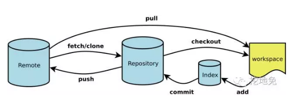

Git常用命令¶
原文链接: https://zhuanlan.zhihu.com/p/25868120
下面是我整理的常用 Git 命令清单。几个专用名词的译名如下。
- Workspace：工作区
- Index / Stage：暂存区
- Repository：仓库区（或本地仓库）
- Remote：远程仓库
一、新建代码库¶
# 在当前目录新建一个 Git 代码库
$ git init
# 新建一个目录，将其初始化为 Git 代码库
$ git init [project-name]
# 下载一个项目和它的整个代码历史
$ git clone [url]
二、配置¶
Git 的设置文件为.gitconfig，它可以在用户主目录下（全局配置），也可以在项目目录下（项目配置）。
# 显示当前的 Git 配置
$ git config --list
# 编辑 Git 配置文件
$ git config -e [--global]
# 设置提交代码时的用户信息
$ git config [--global] user.name "[name]"
$ git config [--global] user.email "[email address]"
三、增加/删除文件¶
# 添加指定文件到暂存区
$ git add [file1] [file2] ...
# 添加指定目录到暂存区，包括子目录
$ git add [dir]
# 添加当前目录的所有文件到暂存区
$ git add .
# 删除工作区文件，并且将这次删除放入暂存区
$ git rm [file1] [file2] ...
# 停止追踪指定文件，但该文件会保留在工作区
$ git rm --cached [file]
# 改名文件，并且将这个改名放入暂存区
$ git mv [file-original] [file-renamed]
四、代码提交¶
# 提交暂存区到仓库区
$ git commit -m [message]
# 提交暂存区的指定文件到仓库区
$ git commit [file1] [file2] ... -m [message]
# 提交工作区自上次 commit 之后的变化，直接到仓库区
$ git commit -a
# 提交时显示所有 diff 信息
$ git commit -v
# 使用一次新的 commit，替代上一次提交
# 如果代码没有任何新变化，则用来改写上一次 commit 的提交信息
$ git commit --amend -m [message]
# 重做上一次 commit，并包括指定文件的新变化
$ git commit --amend ...
五、分支¶
# 列出所有本地分支
$ git branch
# 列出所有远程分支
$ git branch -r
# 列出所有本地分支和远程分支
$ git branch -a
# 新建一个分支，但依然停留在当前分支
$ git branch [branch-name]
# 新建一个分支，并切换到该分支
$ git checkout -b [branch]
# 新建一个分支，指向指定 commit
$ git branch [branch] [commit]
# 新建一个分支，与指定的远程分支建立追踪关系
$ git branch --track [branch] [remote-branch]
# 切换到指定分支，并更新工作区
$ git checkout [branch-name]
# 建立追踪关系，在现有分支与指定的远程分支之间
$ git branch --set-upstream [branch] [remote-branch]
# 合并指定分支到当前分支
$ git merge [branch]
# 选择一个 commit，合并进当前分支
$ git cherry-pick [commit]
# 删除分支
$ git branch -d [branch-name]
# 删除远程分支
$ git push origin --delete [branch-name]
$ git branch -dr [branch-name]
六、标签¶
# 列出所有 tag
$ git tag
# 新建一个 tag 在当前 commit
$ git tag [tag]
# 新建一个 tag 在指定 commit
$ git tag [tag] [commit]
# 查看 tag 信息
$ git show [tag]
# 删除本地tag
$ git tag -d [tag]
# 删除远程tag
$ git push origin :refs/tags/[tag]
# 提交指定 tag
$ git push [remote] [tag]
# 提交所有 tag
$ git push [remote] --tags
# 新建一个分支，指向某个 tag
$ git checkout -b [branch] [tag]
七、查看信息¶
# 显示有变更的文件
$ git status
# 显示当前分支的版本历史
$ git log
# 显示 commit 历史，以及每次 commit 发生变更的文件
$ git log --stat
# 显示某个文件的版本历史，包括文件改名
$ git log --follow [file]
$ git whatchanged [file]
# 显示指定文件相关的每一次 diff
$ git log -p [file]
# 显示指定文件是什么人在什么时间修改过
$ git blame [file]
# 显示暂存区和工作区的差异
$ git diff
# 显示暂存区和上一个 commit 的差异
$ git diff --cached []
# 显示工作区与当前分支最新 commit 之间的差异
$ git diff HEAD
# 显示两次提交之间的差异
$ git diff [first-branch]...[second-branch]
# 显示某次提交的元数据和内容变化
$ git show [commit]
# 显示某次提交发生变化的文件
$ git show --name-only [commit]
# 显示某次提交时，某个文件的内容
$ git show [commit]:[filename]
# 显示当前分支的最近几次提交
$ git reflog
八、远程同步¶
# 下载远程仓库的所有变动
$ git fetch [remote]
# 显示所有远程仓库
$ git remote -v
# 显示某个远程仓库的信息
$ git remote show [remote]
# 增加一个新的远程仓库，并命名
$ git remote add [shortname] [url]
# 取回远程仓库的变化，并与本地分支合并
$ git pull [remote] [branch]
# 上传本地指定分支到远程仓库
$ git push [remote] [branch]
# 强行推送当前分支到远程仓库，即使有冲突
$ git push [remote] --force
# 推送所有分支到远程仓库
$ git push [remote] --all
九、撤销¶
# 恢复暂存区的指定文件到工作区
$ git checkout [file]
# 恢复某个 commit 的指定文件到工作区
$ git checkout [commit] [file]
# 恢复上一个 commit 的所有文件到工作区
$ git checkout .
# 重置暂存区的指定文件，与上一次 commit 保持一致，但工作区不变
$ git reset [file]
# 重置暂存区与工作区，与上一次 commit 保持一致
$ git reset --hard
# 重置当前分支的指针为指定 commit，同时重置暂存区，但工作区不变
$ git reset [commit]
# 重置当前分支的 HEAD 为指定 commit，同时重置暂存区和工作区，与指定 commit 一致
$ git reset --hard [commit]
# 重置当前 HEAD 为指定 commit，但保持暂存区和工作区不变
$ git reset --keep [commit]
# 新建一个 commit，用来撤销指定 commit
# 后者的所有变化都将被前者抵消，并且应用到当前分支
$ git revert [commit]
十、其他¶
# 生成一个可供发布的压缩包
$ git archive